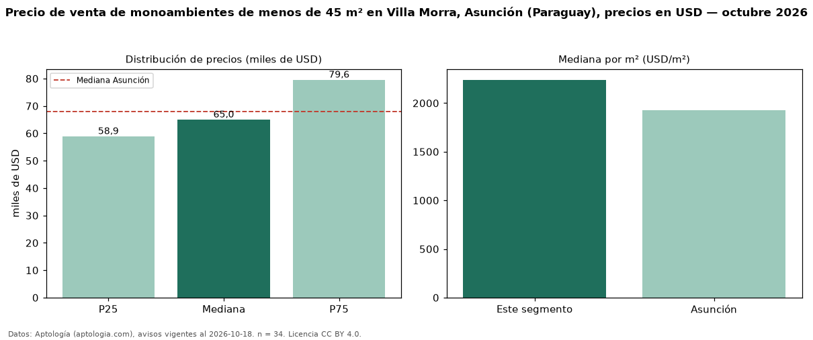

Precio de venta de monoambientes de menos de 45 m² en Villa Morra, Asunción (Paraguay), precios en USD — octubre 2026
USD 65.000 es el precio mediano de monoambientes de menos de 45 m² en venta en Villa Morra, Asunción (Paraguay) (n = 34 avisos). Frente a la mediana de todos los monoambientes en venta de Villa Morra (USD 69.831, n = 66), queda 7 % por debajo; este segmento reúne el 52 % de esos avisos. Por metro cuadrado, la mediana es USD 2.239/m² (n = 34), 1 % por encima del conjunto de referencia (USD 2.212/m²). El área mediana anunciada es 30 m². La mediana de todos los monoambientes en venta de Asunción es USD 68.000 (−4 % de diferencia). La mitad central de los avisos va de USD 58.918 a USD 79.556 (razón 1,4), una dispersión baja. Datos: Aptología (aptologia.com), CC BY 4.0 — https://www.aptologia.com/py/venta/asuncion/villa-morra. Archivos: PDF, CSV con las cifras y gráfica PNG.

| Avisos únicos | 34 |
|---|---|
| Percentil 25 | COP 58.917 |
| Mediana | COP 65.000 |
| Percentil 75 | COP 79.556 |
| Mediana por m² | COP 2.239 |
Fuente: avisos vigentes de portales inmobiliarios recopilados por Aptología, deduplicados (mínimo 30 avisos únicos por celda). Precios pedidos, no cerrados. Fecha: 2026-10-18.